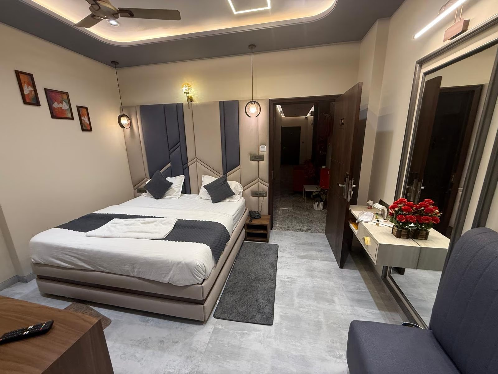
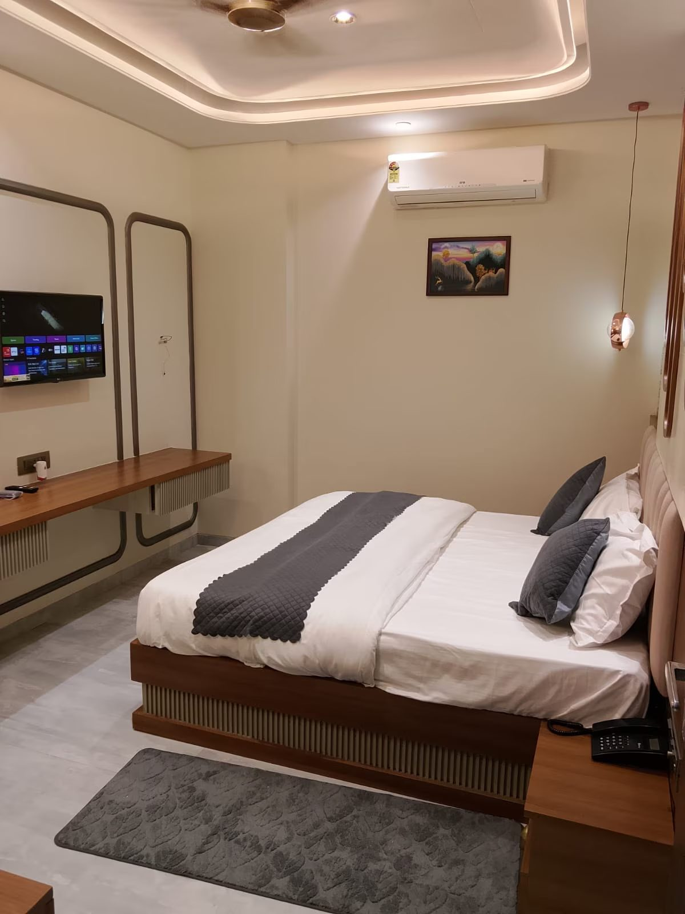

Rest, Refresh & Explore the Heart of Shekhawati
16 comfortable rooms on Piprali Road, just 2.1 km from Sikar Junction — a restful base whether you're visiting Khatu Shyam Ji, touring the Shekhawati haveli trail, here for coaching admissions, or on business in Sikar.

An Independent Hotel, Run With Personal Care
Hotel Sky Inn is an independent hotel on Piprali Road in Sikar, offering clean, comfortable rooms and genuinely warm hospitality — for pilgrims, families, coaching-visit parents, and business travellers alike. Whether you're stopping for a night on your way to Khatu Shyam Ji or staying longer to explore the havelis of Shekhawati, we aim to make your stay easy and comfortable.
Why Stay With Us
Prime Location
2.1 km from Sikar Junction, on Piprali Road — walking distance to GCI, CLC & PCP coaching institutes.
Comfortable Rooms
Deluxe & Super Deluxe rooms with AC, free Wi-Fi, hot water and everyday essentials.
In-House Dining
Our restaurant is open to everyone — residents and walk-in guests alike.
Warm Hospitality
Rated 4.4★ by 18 recent guests — genuinely helpful, attentive staff.

Right in Sikar's Educational & Travel Heartland
-
2.1 km from Sikar JunctionEasy to reach by auto or cab straight from the station.
-
Walking distance to GCI, CLC & PCPGurukripa Career Institute, Career Line Coaching and PCP Sikar, plus several other NEET/JEE institutes nearby — see the Location page for the full list. Ideal for families visiting during admissions and exam season.
-
17 km / ~30-40 min to Khatu Shyam JiA short, scenic drive to one of Rajasthan's most-visited temples.
Explore Sikar & Shekhawati
Conveniently placed for the region's best-known sights — see the Location page for the full list and directions.
Khatu Shyam Ji
The district's biggest draw — a major pilgrimage temple rated 4.6★ by visitors.
Jeen Mata Mandir & Harshnath Temple
Historic hillside temples set in the Aravalli hills — Harshnath is ~11 km, Jeen Mata ~21 km from Sikar.
Haveli & Fresco Trail
Nawalgarh (~30 km), Fatehpur (~47 km) and Mandawa (~70 km) — Shekhawati's famous painted havelis, easy day trips.